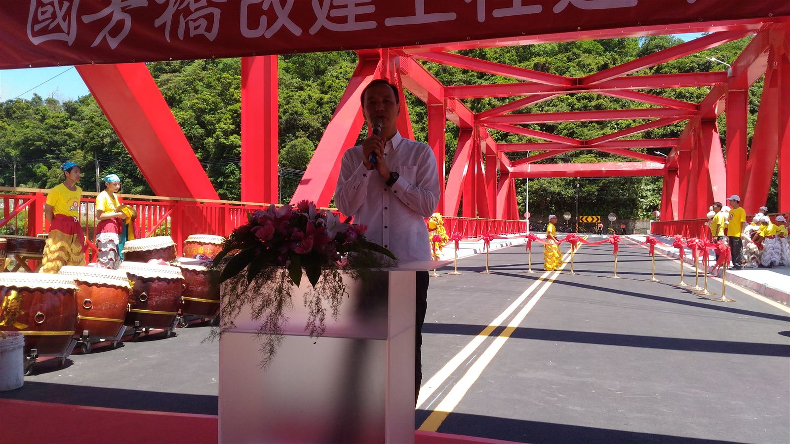
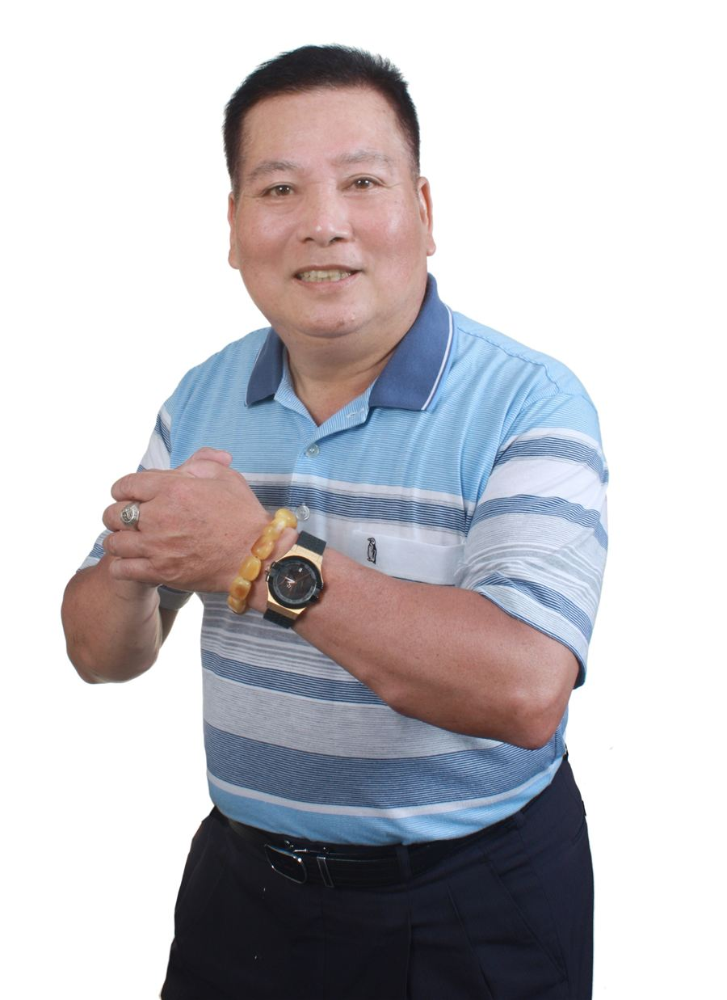
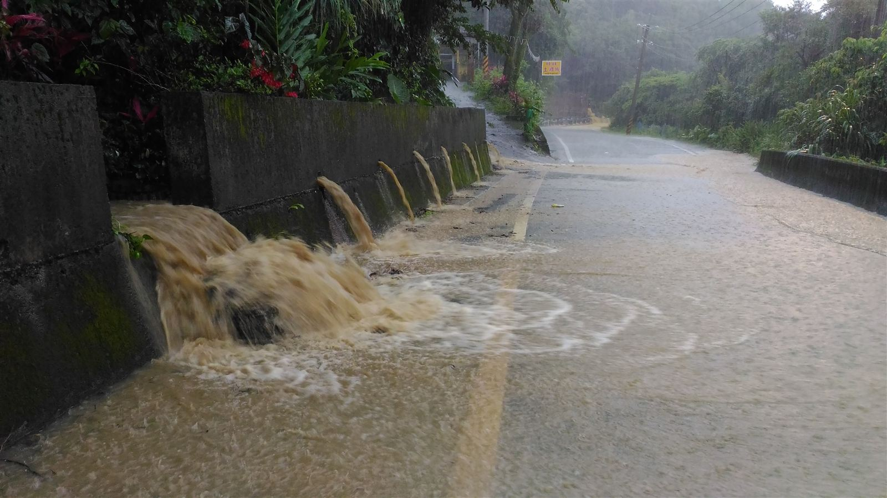

基礎建設與橋樑改建
從基礎建設到橋樑改建，一項一項扎實做好。不求一時風光，只求鄉親每天出入平安，生活都比昨天更好一點。

二十年前，鄉親把這份責任交給瑞明。二十年來，瑞明不敢有一天放鬆。不講華麗的話，用務實誠懇的態度做實在的事。路要走得安心，厝要住得安穩，水要用得放心，這是瑞明對每一戶人家的承諾。

從基礎建設到橋樑改建，一項一項扎實做好。不求一時風光，只求鄉親每天出入平安，生活都比昨天更好一點。

以前一落大雨就心驚驚的路段，瑞明一處一處追到底。現在雨再大，回家的路也不再讓人煩惱。
沿著溪邊為鄉親開出一條好走的路。早上散步、傍晚運動，大人囡仔攏有一個安心的好所在。
陪著鄉親一起把老厝顧好、補強。地牛翻身的時候，一家大小才能安心、免驚惶。
乾淨的水是生活最基本的保障。瑞明陪鄉親跑流程、辦申請，讓每一戶打開水龍頭都用得放心。
民國 103 年、114 年兩度榮獲新北市特優里長，並取得新北市里環境認證 5 星級。這份肯定，屬於每一位一起打拚的鄉親。
現場紀錄
打拼做過的代誌，一項一項做給鄉親看。點一張卡片，看現場照片。
住在山邊、靠著溪水，颱風豪雨是大家心頭的煩惱。瑞明不只用心，更用專業，親身投入防災訓練，把整個里打造成讓鄉親安心的防災社區。
內政部一星防災社區
獲內政部認證為一星防災社區，是中央對全里的肯定。
水保署土石流防災專員
山坡地的風險，瑞明比誰都清楚、比誰都早一步。
新北市消防局防災士
緊急時刻第一個站出來，是鄉親最近的依靠。
一家人
上天里的鄉親，都是自己人。你家的事就是我家的事，有困難，喊一聲，瑞明就到。
顧弱勢
把最需要幫忙的人放在第一位。獨居長輩、困難家庭，瑞明一個都不會漏掉。
做實在
不開空頭支票，用務實誠懇的態度，一件一件把事情做好，做給鄉親看。
在瑞芳讀冊大漢
二十年的經驗是瑞明的底氣，鄉親的信任是瑞明的動力。有任何需要協助的地方，歡迎隨時聯絡。